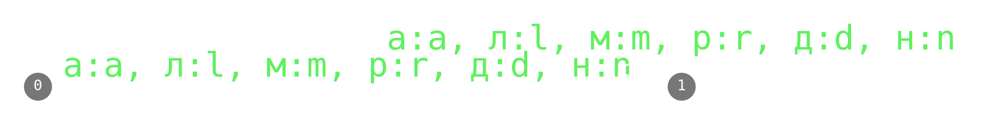
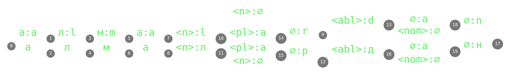

Multi-script morphological transducers and transcribers for seven Turkic languages
Jonathan N. Washington¹ · Francis M. Tyers²,³ · Oğuzhan Kuyrukçu⁴
- Swarthmore College, USA
- Indiana University, USA
- Высшая Школа Экономики, Москва
- Boğaziçi Üniversitesi, İstanbul


Overview
We are working to augment
morphological transducers
for 7 Turkic languages
with support for
multiple orthographies
and IPA transcription systems.
morphological transducers
for 7 Turkic languages
with support for
multiple orthographies
and IPA transcription systems.
The next ~18 minutes:
- What does that even mean?
- Morphological transducers
- Orthographies for Turkic languages
- Motivation (why)
- How it works
- basic approach
- challenges
- (some) solutions
- Evaluation
- Future work
Morphological transducers
- Map between linguistic forms and morphological analyses:
- A single transducer can perform analysis and generation.
- In the form of a state machine with two tapes, separated by ‘:’
- Extremely efficient, ideal for concatenative morphology
- Useful for all sorts of morphological processing tasks:
MT, corpus searching, spell-checking, predictive text, ...
Morphological analysis
алма → алмаалмадан → алма
алмалар → алма
алмалардан → алма
Morphological generation
алмаалма
алма
алма

Turkic transducers
- Hand-crafted transducers for ~20 Turkic languages
- Support nearly all productive morphology, large lexicon
- Developed for use in MT systems, as spell checkers, and other lg. tech.
- Entirely open source, available for any purpose
- Washington, Salimzianov, Tyers, Gökırmak, Ivanova, & Kuyrukçu (to appear)
 Production-level
Production-level92%-98% coverage
(Tatar,
Working
88-93% coverage
(Bashqort, Chuvash,Uzbek , Qaraqalpaq , Uyghur , Sakha, Karachay-Balkar, Gagauz, Kumyk)
88-93% coverage
(Bashqort, Chuvash,
 Prototype
Prototype<80% coverage
(Azerbaycani,
Turkic orthographies
| Perso-Arabic | Cyrillic | Latin | |
|---|---|---|---|
| Kazakh | official in China | (still) official in Kazakhstan |
(soon to be) official in Kazakhstan |
| Uzbek | used in Afghanistan | previously official, still widespread | official in Uzbekistan |
| Uyghur | official in China |
previously official in Soviet Union | used in diaspora |
| Turkmen | used in Iran and Afghanistan | previously official, still widespread | official in Turkmenistan |
| Kyrgyz | official in China | official in Kyrgyzstan |
— |
| Qaraqalpaq | — | previously official, still widespread | ≥3 recent official versions (1994, 2006, 2016) |
| Crimean Tatar | — | official in Republic of Crimea | widely used since 1990s |
orthography of transducer implementation
Turkic transducers
Adding orthographies: motivation
- academic work on corpora can expand to
include text from more sources - language technology that uses these transducers (MT systems, spell checkers) will be
accessible to more communities - allows simple conversion between orthographies (potential to enable
textual exchange between different communities using a single language with different scripts) - transcribers (IPA support) useful for
development of text-to-speech systems
Adding orthographies
What we start with
Cyrillic generation
алмаалма
алма
алма
Cyrillic analysis
алма → алмаалмадан → алма
алмалар → алма
алмалардан → алма
What we want
Cyrillic generation
алмаалма
алма
алма
Bi-scriptual analysis
алма → алмаalma → алма
алмадан → алма
almadan → алма
алмалар → алма
almalar → алма
алмалардан → алма
almalardan → алма
Latin-script generation
алмаалма
алма
алма
Our approach: basic idea
Cyrillic transducer
[compose-intersect]
transliteration transducer
[yields]
Latin-script transducer (for generation)
Our approach: basic idea
Cyrillic transducer
[union]
Latin-script transducer
[yields]
Biscriptual transducer (for analysis)
Challenge: 1-letter to 2-letter mappings
Example: Cyrillic ‹я› ↔ Latin-script ‹ya›
level 1 (lexc)
я:йай:й
а:а
…:…
[compose intersect]
level 2 (twol)
й:yа:a
…:…
[yields]
transliteration transducer
Challenge: Kazakh dayekshe
dayekshe used at beginning of front-vowel words in Kazakh in which an unambiguously "front" letter is not present
e.g., ٴتىلى = tili (*tılı)
تىلىندە = tilinde
e.g., ٴتىلى = tili (*tılı)
تىلىندە = tilinde
Solution:
- insert special symbol at the beginning of all words in level 1
- delete it by default in level 2
- in level 2, restrict output as dayekshe to only words where a Cyrillic front-vowel letter that is unambiguous in backness in the Perso-Arabic script is used and no unambiguously front character is in the word
Challenge: Spelling variants
Example: different encodings of Uzbek ʻ (oʻ, gʻ, aʻ)
| character | unicode | name |
|---|---|---|
| ʻ | U02BB | turned comma / ʻokina |
| ʼ | U02BC | letter apostrophe |
| ‘ | U2018 | opening single quote |
| ’ | U2019 | closing single quote |
| ' | U0027 | apostrophe |
| ` | U0060 | backtick |
Solution:
- additional transducer compose-intersected with analyser
- provides all variants on orthographic form side
Challenge: competing mappings
Example: Crimean Tatar ‹ё› / ‹оCь›, ‹ю› / ‹уCь›
base transducer Latin, additional analyser + generator Cyrillic
кёр = kör ‘blind’
корь = kör ‘see’
къой = qoy ‘put’
корь = kör ‘see’
къой = qoy ‘put’
юз = yüz ‘hundred’
юзь = yüz ‘face’
ют = yut ‘swallow’
юзь = yüz ‘face’
ют = yut ‘swallow’
Solution:
- Much of it sortable by level-2 rules, but cf. examples
- Additional weighted transducer based on n-gram frequencies from corpus, compose-intersected with unaugmented transliteration transducer
- Tyers, Washington, Kavitskaya, Gökırmak, Howell, Berberova (2019)
Challenge: competing mappings
Example: letter case in Uyghur Cyrillic
No letter case in base orthography
تىل = тил
تىل = Тил (sentence-initial)
تىل = Тил (sentence-initial)
قازاقستان = Қазақстан
قازاقستانلىق = қазақстанлиқ
قازاقستانلىق = қазақстанлиқ
Solution:
- Analysis is easy: union all upper-case letters with all lower-case equivalents in form side
- Generation: n-gram model like for Crimean Tatar, intersected with analysis transducer?
- ...not yet implemented, probably a few sub-challenges we haven't thought of yet
Challenge: stress marks
- Stress
morphologically conditioned in Turkic No morphological information at time of composition- Potential solution:
add marks for "stress this syllable" and "stress previous syllable" to morphology- normally realise these marks as
0 - compute stress mark location based on these symbols in transliteration layer-2
Evaluation: naïve coverage
The percentage of forms in a corpus for which an analysis is returned, whether correct or not
| Perso-Arabic | Cyrillic | Latin | |
|---|---|---|---|
| Kazakh | 94.62% | 96.53% |
— |
| Uzbek | — | 91.30%² | 94.40% |
| Uyghur | 90.54% | 71.07% | — |
| Turkmen | — | 70.64% | 69.00% |
| Kyrgyz | 93.59% | 93.37% |
— |
| Qaraqalpaq | — | 92.94% | 91.84%, — |
| Crimean Tatar | — | 91.27% | 91.93%¹ |
orthography of transducer implementation
partial and full bible translations (~200K-~700K words)
¹ Wikipedia dump (comparable size)
² Quran translation (comparable size)
Qualitative evaluation
Of incorrect forms in the corpus, how many are:
- transliteration errors — problems with our transliterators
- form not in transducer — base transducer lacks form
- correct form — form is correct, but not in transducer (most commonly proper nouns)
- spelling difference — form is spelled differently in the different orthographies (e.g., تئرواستاعى = Троастагы
kir ) - invalid form — invalid form in the language (e.g., typo, misspelling, bad tokenisation, word from another language)
| Crimean Tatar Cyrillic |
Kyrgyz Perso-Arabic |
|
|---|---|---|
| transliteration error | 51 | 7 |
| correct form | 301 | 347 |
| spelling difference | 2 | 3 |
| invalid form | 32 | 3 |
| Total | 386 / 1200 | 360 / 1200 |
Future work
- Better ways to deal with different lexicon used in different orthographies
- Increase accuracy by solving current and new challenges
- Expand to more languages and orthographies
Сагъ олунгыз! · Sağ oluñız!
Raxmet! · Рахмет!
Рахмет! · Rahmet! · راحمەت!
Ракмат! · راقمات!
Sag boluň! · Саг болуң!
رەھمەت! · Рәһмәт! · Rehmet!
Rahmat! · Раҳмат!
What lexc and twol look like
LEXION Root
Noun-Stems ;
LEXICON Noun-Number
sg : # ;
pl :e s # ;
LEXICON Noun-Infl
n :%> Noun-Number ;
LEXICON Noun-Stems
wolf:wolF Noun-Infl ;
wolf:wolf Noun-Infl ; ! Dir/LR
dwarf:dwarF Noun-Infl ;
dwarf:dwarf Noun-Infl ; ! Dir/LR
bird:bird Noun-Infl ;
Noun-Stems ;
LEXICON Noun-Number
LEXICON Noun-Infl
LEXICON Noun-Stems
wolf:wol
wolf:wolf Noun-Infl ; ! Dir/LR
dwarf:dwar
dwarf:dwarf Noun-Infl ; ! Dir/LR
bird:bird Noun-Infl ;
Alphabet
A B C D E F G H I J K L M N O P Q R S T U V W X Y Z
a b c d e f g h i j k l m n o p q r s t u v w x y z
e :0
F :f
%>:0 ;
Rules
"e as e after sibilants etc."
e :e <=> [ s | z ] %>: _ ;
s h %>: _ ;
F : %>: _ ;
"F as v before e "
F :v <=> _ %>: e : ;
A B C D E F G H I J K L M N O P Q R S T U V W X Y Z
a b c d e f g h i j k l m n o p q r s t u v w x y z
%>:0 ;
Rules
"
s h %>: _ ;
"